Million Beat는
이렇게 만들어졌어요
4인조 AI 아이돌의 데뷔곡 뮤직비디오.
기획부터 컷 생성, 편집까지 실제로 거친 순서와 실패에서 배운 것을 정리했어요.
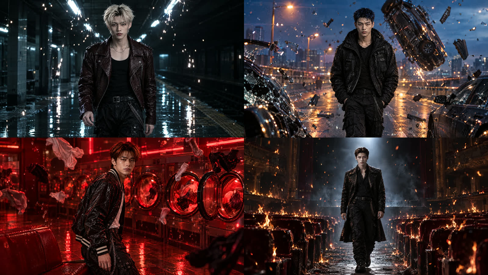
노래는 약 3분, 100BPM의 다크 컨셉 곡이에요. 화면은 약 60컷으로 만들었고, 컷 하나는 보통 4~5초, 롱테이크는 10초로 생성했어요. 처음에는 무대 군무 위주로 만들다가, 춤이 가짜처럼 보이는 문제를 겪고 나서 방향을 바꿨어요. 이 가이드의 절반은 그 전환에서 배운 내용이에요.
| 순서 | 무엇을 하나요? |
|---|---|
| 기획 | 곡 구조에 맞춰 장면과 멤버 파트를 나누고, 레퍼런스 MV를 분석해요. |
| 에셋 등록 | 멤버 얼굴, 장면별 의상, 장소를 Higgsfield 요소(Element)로 등록해요. |
| 시작 프레임 · GPT Image 2.5 | 컷마다 원하는 앵글로 첫 장면을 먼저 만들어요. |
| 영상 · Seedance 2.0 | 시작 프레임과 요소를 넣고 카메라·동작·타임라인을 적어요. |
| 편집 | 노래 박자에 맞춰 컷을 놓고, 오류 구간을 잘라내요. |
뒷부분에는 실제 컷 5개의 화면과 입력 프롬프트 원문을 실었어요. 원본 인물 사진, 계정 내부 ID, 전체 프롬프트 묶음은 넣지 않았어요.
무대 대신,
멤버마다 세계를 줘요
AI가 약한 것을 피하고, 잘하는 것을 앞에 세우는 기획이에요.
처음 버전은 조명이 하나씩 켜지며 네 명이 무대에 등장하는 인트로였어요. 결과는 깔끔했지만, 군무 컷이 늘어날수록 동작이 가짜처럼 보였어요. 그래서 레퍼런스 MV 몇 편을 다시 봤어요. 공통점은 현실적인 공간에 초현실적인 사건이 하나 일어나고, 그 안에서 인물은 춤 대신 걷거나 돌아보는 정도로만 움직인다는 거였어요.
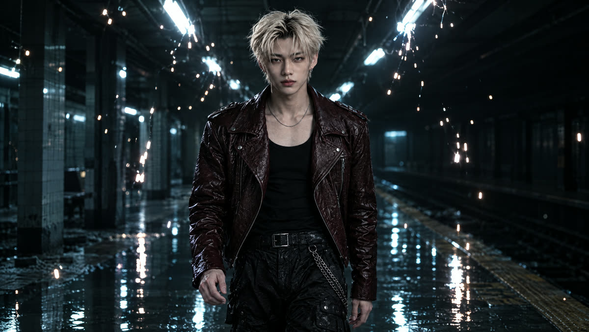
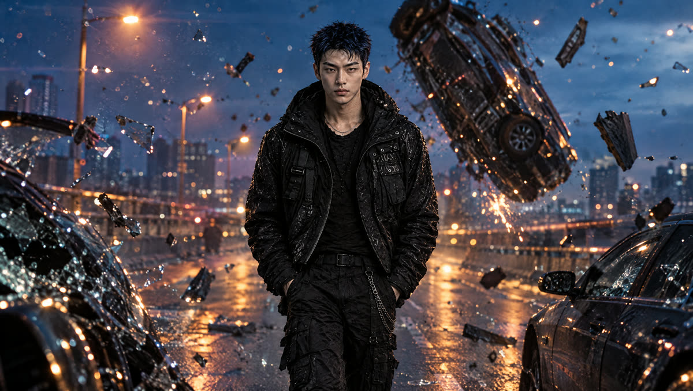
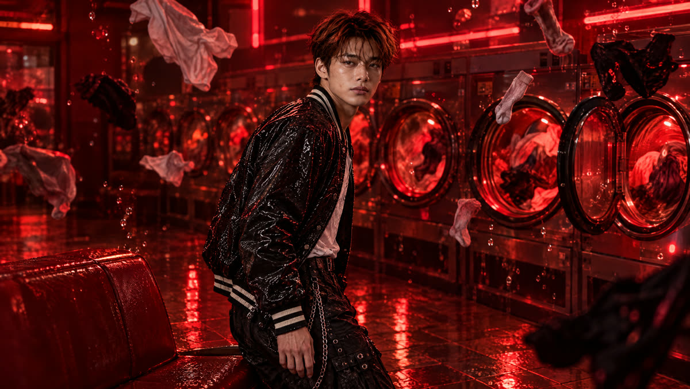
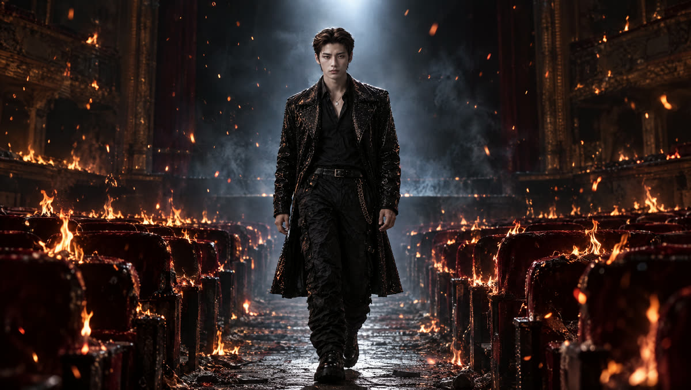
그래서 인트로를 멤버별 솔로 월드로 바꿨어요. 파트 순서대로 한 명씩 자기 세계에서 등장하고, 네 세계의 불이 하나씩 꺼진 뒤에야 처음으로 네 명이 한 무대에 서요. 이 세계들은 2절과 브릿지, 엔딩에서 다시 나와요.
| 정할 것 | Million Beat에서는 |
|---|---|
| 곡의 큰 컨셉 | 다크, 심장박동, 정전 · 100BPM |
| 멤버별 세계 | 현실 공간 하나 + 그 공간에서만 일어나는 초현실 사건 하나 |
| 움직임 | 춤보다 걷기, 앉기, 만지기, 돌아보기 |
| 반복 장치 | 세계가 심장박동에 맞춰 반응해요 (불꽃, 드럼, 불길이 박자에 맞춰 커졌다 작아짐) |
생성 전에
에셋부터 등록해요
인물이 컷마다 바뀌는 문제는 대부분 여기서 막을 수 있어요.
Higgsfield의 요소(Element)에 멤버 4명의 얼굴, 장면별 의상, 장소를 따로 등록했어요. 프롬프트 안에 요소를 넣으면 해당 이미지가 함께 전달돼요. 등록은 한 번이지만 이후 모든 컷의 품질을 좌우해요.
| 요소 종류 | 등록한 것 |
|---|---|
| 인물 | 멤버 A·B·C·D 얼굴 각 1개 |
| 의상 | 장면 4개 × 멤버 4명 = 16개 (콘티 스틸 원본 의상 기준) |
| 장소 | 블랙 무대, 스피커 월, 옥상, 고속도로 등 사람 없는 빈 배경 |
- 콘티 스틸을 먼저 만들고, 마음에 드는 스틸의 의상을 그대로 정면·측면·뒷면으로 다시 뽑아요.
- 장소는 사람이 없는 빈 배경으로 만들어요. 사람이 있으면 그 인물이 영상에 끼어들어요.
- 요소 이름에 장면 번호를 붙여두면 프롬프트에서 고르기 쉬워요. 예: MB_A_02_conti
앵글은
시작 프레임으로 고정해요
프롬프트에 "부감", "로우앵글"이라고 써도 안 먹힐 때가 많아요.
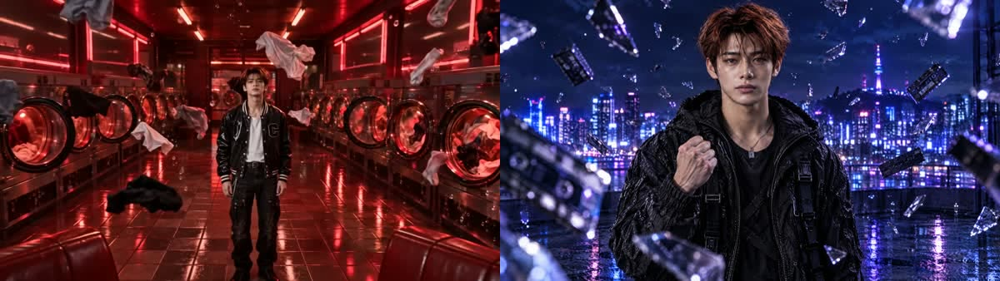
참고 이미지(reference)만 넣으면 Seedance는 그 이미지의 구도를 거의 그대로 따라가요. 그래서 앵글이 중요한 컷은 GPT Image 2.5로 원하는 앵글의 첫 장면을 먼저 만든 뒤, 그 이미지를 시작 이미지(start image)로 넣었어요. 이렇게 바꾼 뒤로는 의도한 앵글이 거의 그대로 나왔어요.
이미지 1은 멤버 C의 얼굴 사진, 이미지 2는 C의 의상, 이미지 3은 장소예요. CAMERA: 미디엄샷, 눈높이, 중앙 구도. C가 젖은 옥상에 서서 오른손 주먹을 가슴 높이로 쥐고 렌즈를 봐요. 떠 있던 유리 조각과 카세트테이프가 주변 공중에 멈춰 있고, 일부는 카메라 바로 앞에서 흐려져요. 뒤로 블루바이올렛 서울 야경. 정확히 1명, 그 외 사람 없음. 손가락 다섯 개. 글자·로고 없음.
프롬프트는
칸을 나눠 써요
긴 문장 하나보다 다섯 칸이 훨씬 정확해요.
| 칸 | 무엇을 적나요? |
|---|---|
| CAMERA | 앵글, 렌즈, 무빙 한 가지. "시작 이미지 구도에서 시작"을 꼭 붙여요. |
| SUBJECT | 멤버 요소와 장소 요소. 머리색 같은 특징을 괄호로 한 번 더 적어요. |
| TIMELINE | 0–2초, 2–4초처럼 구간마다 동작 하나씩. |
| FX | 배경에서 일어나는 효과. 사람 동작과 섞지 않아요. |
| LOCK | 인원 수, 얼굴 유지, 의상 유지, 손가락, 변형 없음, 컷 없음. |
CAMERA: [앵글], [렌즈], [무빙 하나]. Begin exactly on the start image composition. SUBJECT: [@멤버 요소] ([머리색 등 특징]) on [@장소 요소]. TIMELINE: 0-2s [동작 하나]; 2-4s [동작 하나]; 4-5s [마무리 자세]. FX: [배경 효과]. LOCK: exactly [N] people for the whole shot, nobody else appears; faces identical to the referenced characters; the same outfits as the start image; five fingers; no morphing; one continuous shot, no cuts. Photoreal 35mm film.
한 세계 안에서도
컷마다 바꿔요
같은 세계에서 같은 앵글이 이어지면 바로 지루해져요.
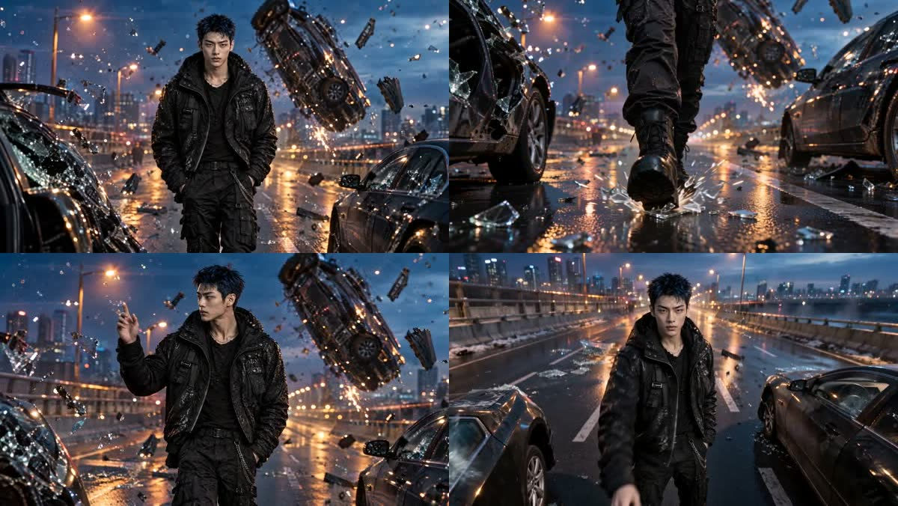
처음에는 멤버마다 10초짜리 롱테이크를 하나씩 만들었어요. 분위기는 좋았지만 한 컷이 길어지니 금방 지루했어요. 그래서 컷마다 앵글, 카메라 무빙, 동작 세 가지를 모두 바꾸는 원칙을 세웠어요.
| 고르는 것 | 선택지 |
|---|---|
| 앵글 | 눈높이, 로우, 웜즈아이(바닥에서 올려다보기), 부감, 더치(기울인 화면) |
| 무빙 | 돌리, 오빗, 크레인, 불릿타임, 사물 안에서 본 시점 |
| 동작 | 걷기, 만지기, 앉았다 일어서기, 올려다보기, 돌아보기 |
군무는
가리면서 보여줘요
전신이 오래 보이고, 동작이 많고, 조명이 일정하면 가짜처럼 보여요.
AI 군무가 어색한 이유는 보통 이 세 가지예요. 반대로 하면 돼요. 조명이 박자마다 꺼졌다 켜지게 하고, 동작은 한두 개로 줄이고, 카메라를 천천히 움직여 작은 오류를 흘려보내요.
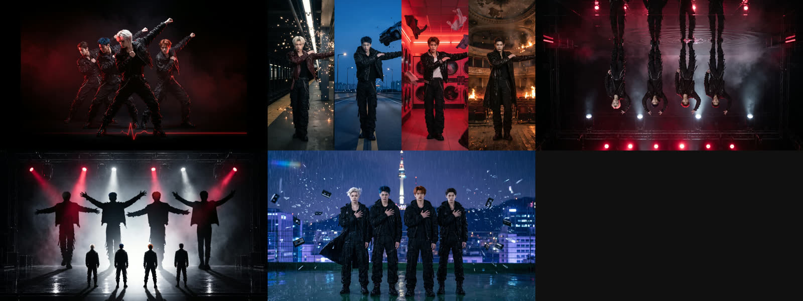
- 스트로브 · 박자마다 붉은 섬광이 터질 때만 보여요. 섬광 사이 동작은 어둠이 가려줘요.
- 릴레이 · 화면을 네 칸으로 나눠 각자 세계에서 한 명씩 춤춰요. 한 칸에 한 명이라 인원 오류가 거의 없어요.
- 멤버마다 조금씩 다른 안무 · 같은 박자에 다른 동작을 시키고, 마지막 박에만 같은 포즈로 모아요. 완벽한 칼군무보다 자연스러워 보여요.
- 동작은 단순하게 · "앉았다 → 팔 하나 뻗기 → 멈춤"처럼 구간마다 하나씩.
자주 나는 오류와
고치는 법
다 만든 영상은 1초마다 한 장씩 뽑아 한 장의 시트로 확인했어요.
| 오류 | 원인과 해결 |
|---|---|
| 인원이 늘거나 줄어요 | 참고 이미지에 사람이 더 있었거나, 카메라가 크게 움직였어요. → LOCK에 인원 수, 흠 있는 이미지 빼기, 앞부분만 잘라 쓰기. |
| 첫 순간 사람이 없다가 생겨요 | 시작 프레임과 다른 구도로 시작할 때 생겨요. → 편집에서 앞 0.3~0.5초를 잘라요. |
| 앞부분이 멈춰 있다 시작해요 | 첫 몇 프레임이 정지 화면처럼 나와요. → 앞 0.4초 정도 잘라요. |
| 끝에 의상이 바뀌어요 | 롱 오빗처럼 등을 돌았다 돌아올 때 자주 생겨요. → 바뀌기 전까지만 써요. |
| 발이 돌아가요 | 걷는 동작이 길 때 생겨요. → 발이 보이는 구간을 짧게 쓰거나 컷을 빼요. |
| IP 필터에 걸려요 | 결과물이 실존 인물과 닮았다고 판단될 때 막혀요(크레딧은 차감되지 않았어요). → 다시 생성하거나 시작 프레임을 새로 만들어요. |
박자 위에
컷을 놓아요
컷이 박자 위에서 바뀌기만 해도 영상이 훨씬 단단해 보여요.
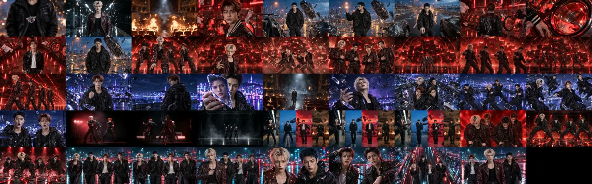
- 곡의 BPM을 확인해요. 100BPM이면 1박 0.6초, 1마디 2.4초예요.
- 절, 후렴, 브릿지가 시작하는 지점을 찾아 구간을 나눠요. 소리가 크게 바뀌는 곳이 보통 구간의 시작이에요.
- 모든 컷 전환을 박자 위에 놓아요. 컷 길이는 1.8초, 2.4초, 3초처럼 박자 단위로.
- 노래하거나 랩하는 입 모양 컷은 그 멤버 파트에, 마디가 시작하는 곳에 놓아요.
- 오류 구간은 과감하게 잘라요. 짧아진 만큼은 앞뒤 컷을 늘려 채워요.
다음은 실제 컷 사례예요. 이미지는 생성된 영상의 한 장면이고, 프롬프트는 실제 입력 원문이에요. 계정별 요소 ID만 @A·@B 같은 표기로 바꿨어요.
유리 조각을 튕기는 B
멈춘 사고 현장에서 B가 공중의 유리 조각을 손가락으로 튕기고, 카메라는 반 바퀴 돌아요.
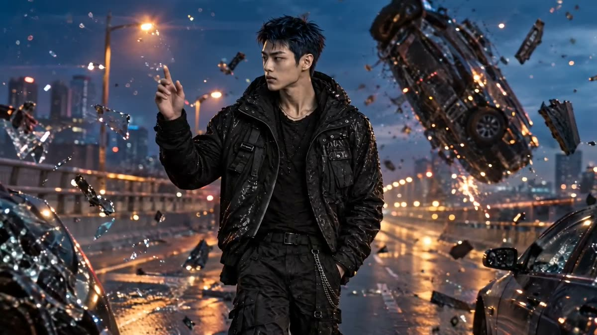
Medium shot. The camera orbits 180 degrees around @B (member B, spiky blue-black hair) as he stops beside the car hanging mid-flip above the highway in the reference image. He reaches up and flicks a floating shard of glass with one finger, and it spins in place, glinting. Then he looks back to camera, rapping with natural mouth movement. Debris hangs motionless all around, with sodium-orange streetlights and a cold blue sky. Exactly one person in the entire shot, nobody else appears. Natural realistic human movement, no dancing. Same outfit as the reference image. Photoreal K-pop music video, 35mm anamorphic film, surreal CG realism, face identical to the referenced character, five fingers on each hand, no morphing, single continuous shot, no cuts.
세탁기 안에서 본 C
카메라를 돌아가는 세탁기 드럼 안에 넣었어요. 화면 전체가 드럼과 함께 천천히 돌아요.
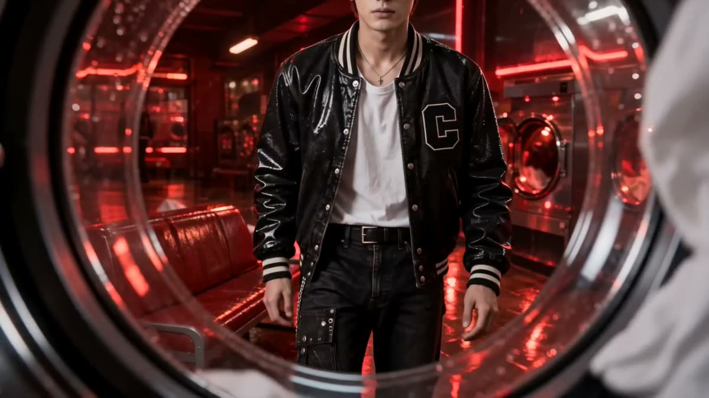
Point of view from inside a spinning washing machine drum, looking out through the round glass door into the red-lit laundromat from the reference image. The whole frame rotates slowly with the drum, and wet laundry tumbles across the edges of the glass. Outside, @C (member C, copper-red hair, freckles) stands up from the bench and walks toward the machine, leaning in to look through the glass. Exactly one person in the entire shot, nobody else appears. Natural realistic human movement, no dancing. Same outfit as the reference image. Photoreal K-pop music video, 35mm anamorphic film, surreal CG realism, face identical to the referenced character, five fingers on each hand, no morphing, single continuous shot, no cuts.
유리에 비친 D
유리 조각에 비친 얼굴에서 서울 야경으로 초점이 넘어가는 랙포커스 컷이에요.
CAMERA: extreme close-up, locked-off, with a rack focus. Begin exactly on the start image composition. SUBJECT: @D (member D, dark brown swept-back hair) holding a large jagged shard of glass in front of his face, with the Seoul skyline @E03_skyline behind. TIMELINE: 0-2.5s focus stays on the glass and on his face reflected in it, singing softly; 2.5-4s the focus slowly racks past the glass to the city skyline, turning into sharp blue-violet lights; 4-5s he slowly lowers the shard out of frame. FX: magenta and blue city bokeh, light glinting along the glass edge. LOCK: exactly one person, nobody else; face identical to the referenced character; five fingers on the hand holding the glass; no morphing; one continuous shot, no cuts. Photoreal 35mm film.
갈라지는 무대
네 명이 동시에 바닥을 구르면 무대가 붉게 갈라지는 댄스브레이크 하이라이트예요.
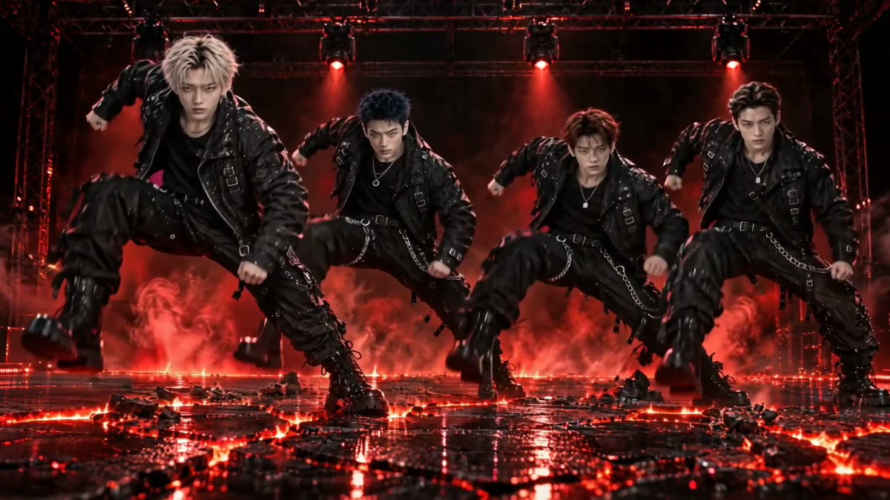
CAMERA: frontal low-angle wide shot, locked-off with a short hard shake on the impact. Begin exactly on the start image composition. SUBJECT: the four members @A (A, platinum blonde), @B (B, blue-black), @C (C, copper-red), @D (D, dark brown) in a wide stance in a row on the stage @E01_stage_cracked. TIMELINE: 0-1.5s all four lift their right foot; 1.5s all four stomp down together at the same instant; 1.5-4s the black floor cracks open beneath them in jagged lines glowing red, and sparks spray upward. FX: red light bursting through the cracks, embers, haze. LOCK: exactly four people for the whole shot, nobody else appears; faces identical to the referenced characters; the same black stage outfits as the start image; realistic body weight; no morphing; one continuous shot, no cuts. Photoreal 35mm film.
네 세계를 잇는 군무
화면을 네 칸으로 나눠 각 멤버가 자기 세계에서 춤추고, 팔 동작이 칸을 넘어 이어져요.
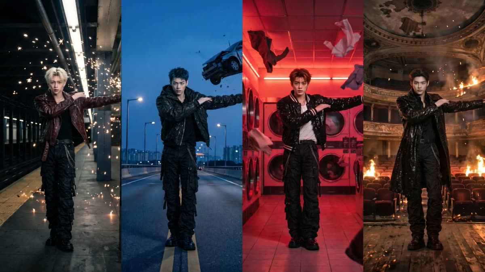
CAMERA: locked frontal frame with a very slow push-in; the four vertical panels and their soft seams stay fixed in place for the whole shot. Begin exactly on the start image composition. SUBJECT: one member alone in each panel, left to right: @A (A, platinum blonde) on the blackout subway platform with frozen sparks; @B (B, spiky blue-black hair) on the elevated highway at blue hour with a car frozen mid-air; @C (C, copper-red hair) in the red neon laundromat with floating laundry; @D (D, dark brown hair) in the burning theater with rising embers. CHOREOGRAPHY, each member slightly different, same rhythm: 0-3s A sweeps his arm across and steps side to side; B does a sharp chest pop and shoulder isolation; C does fluid arm waves; D does a slow body roll. 3-7s the move travels left to right like a relay: each member's arm swing flows across the seam into the next panel. 7-10s all four snap into the same pose together, right arm extended to the right, and look into the lens. FX: each world stays alive: sparks drift in panel 1, debris hangs in panel 2, laundry floats up in panel 3, embers rise in panel 4. LOCK: exactly four people, one per panel, nobody else; each member stays inside his own panel; faces identical to the referenced characters; the same outfits as the start image; five fingers; no morphing; one continuous shot, no cuts. Photoreal 35mm film.
처음에는
한 멤버, 한 세계부터
네 명의 군무보다, 한 명이 자기 세계를 걷는 4초가 먼저예요.
한 멤버의 세계 하나를 정하고, 시작 프레임 한 장, 4초 영상 하나를 끝까지 만들어보세요. 앵글을 바꿔 두세 컷을 더 만들면 그 세계가 살아나요. 그다음에 멤버를 늘리고, 마지막에 군무를 붙이면 실패가 훨씬 줄어요.
| 만든 뒤 확인할 것 | 스스로 물어보기 |
|---|---|
| 인원 | 처음부터 끝까지 정확히 그 인원인가요? |
| 얼굴과 의상 | 컷이 바뀌어도 같은 사람, 같은 옷인가요? |
| 앵글 | 앞 컷과 다른 앵글, 다른 무빙인가요? |
| 시작과 끝 | 첫 0.5초와 마지막 1초에 이상한 게 없나요? |
| 박자 | 컷이 박자 위에서 바뀌나요? 입 모양은 그 멤버 파트인가요? |
필요할 때 찾아볼 공식 안내
공개판 v1 · 2026.10.24
도구의 메뉴와 지원 범위는 바뀔 수 있어요. 이용 중인 화면과 공식 안내를 함께 확인해주세요.